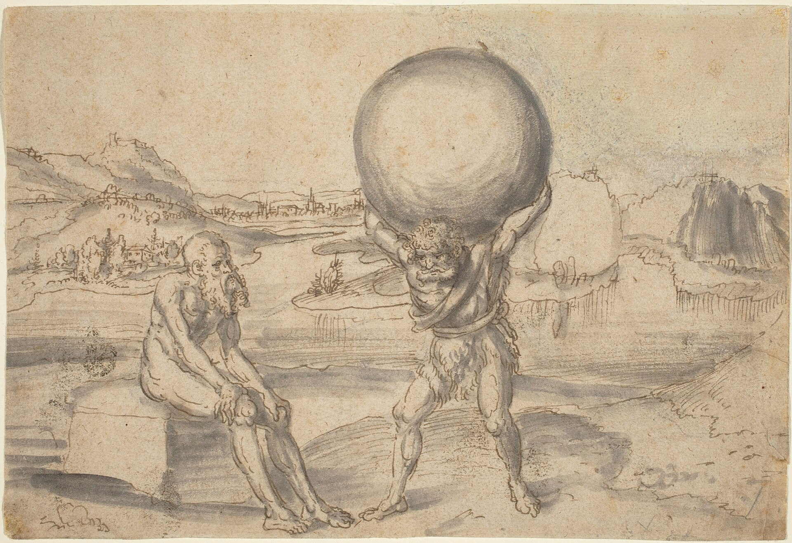
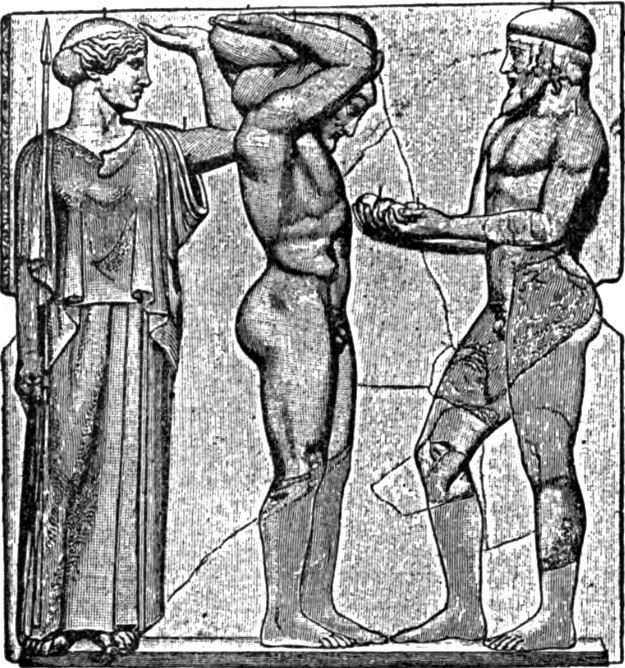
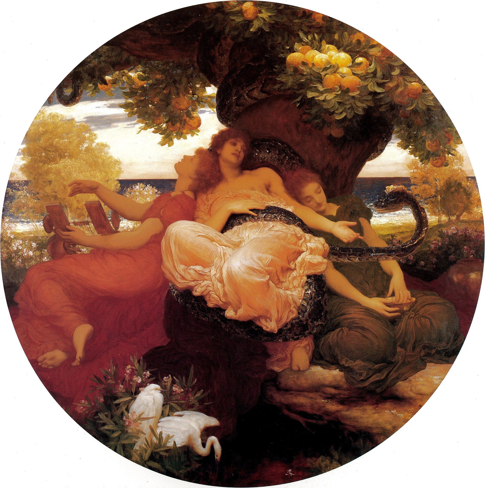
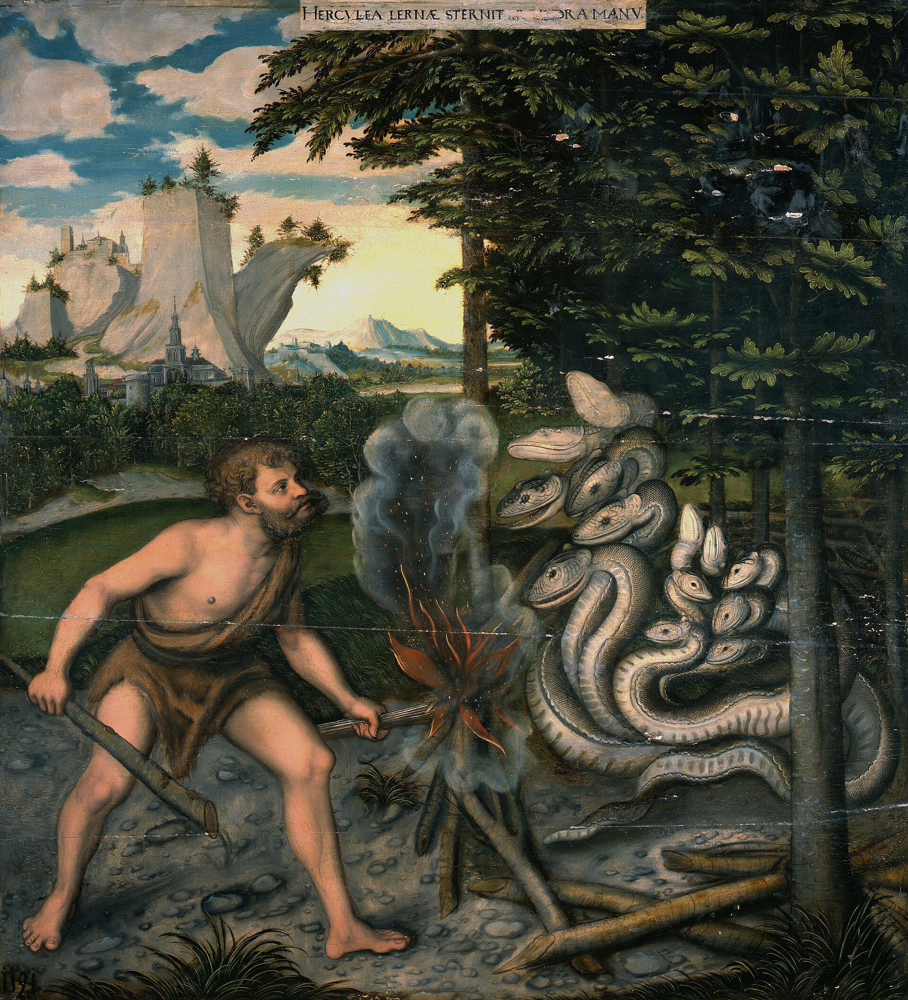
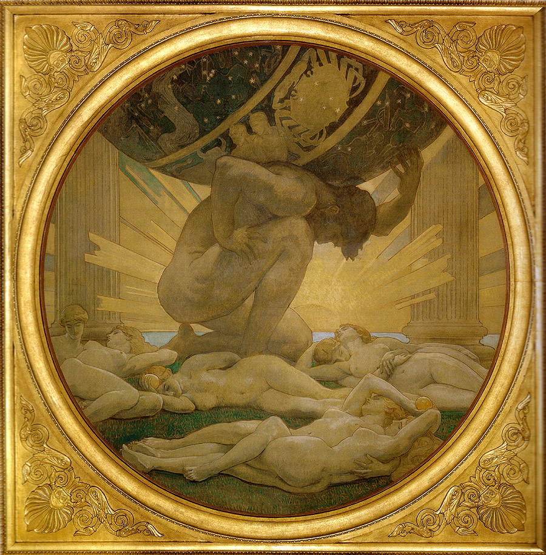

MoT London · The unseen cost of quality
Who's holding what now?
New tools, shifting burdens and learning to keep up
Luke LR · Nov 2026

The myth
Hold this for a sec.
Lucas Cranach the Elder, Hercules and Atlas, c. 1530 · Apollodorus, Library 2.5.11
Same tools, different approaches.
With lower engagment
More work, more hours
Output that makes work for someone else
Losing ownership of the answer and understanding
with consideration
Individuals matched whole teams
Novices gained the most, but experts still grow
When the AI asked learnings grew.
How we engage matters: New tools or old the pattern holds.
Korn Ferry 2026 · Ranganathan & Ye, HBR 2026 · Niederhoffer et al., HBR 2025 · Dell'Acqua et al. 2025 · Brynjolfsson et al. 2025 · Bastani et al. 2025 · DORA 2025 · BCG 2026 · Lee et al. 2025
Look at the old carving.
Heracles had a pad.
And he had help.

Atlas metope, Temple of Zeus, Olympia, c. 460 BC
Pad 1 · the apples
Decide where the apples go.
Some go to more work. That's fine. Some become pads.
Ranganathan & Ye, HBR 2026 · Gallup 2026 · Klein, HBR 2007
Pad 2 · staying in it
Keep asking why.
Not to justify it. To stay engaged.
Taylor, Shumsky & Siderius, Tuck 2026 · Shen & Tamkin, Anthropic 2026 · Stack Overflow Survey 2026 · Parasuraman & Riley 1997 · MIT Tech Review / Infosys 2025
Pad 3 · practice
Fly by hand, sometimes.
Pilots who stayed sharp didn't switch the autopilot off. They kept thinking while it flew.
Casner et al. 2014 · Budzyń et al., Lancet Gastro Hep 2025 · BCG 2026 · Kosmyna et al., MIT 2025 · Bjork & Bjork 2011

Pad 4 · the garden
Take someone into the garden.
Instructor, not chauffeur.
Brynjolfsson, Chandar & Chen 2026 · Yu, Moon et al., AIES 2026 · IBM 2026 · BCG 2026 · techUK · Frederic Leighton, The Garden of the Hesperides, 1892

Pad 5 · glue work
Count the help.
Eurystheus said the Hydra didn't count. Heracles had help.
Apollodorus 2.5.2 · del Rio-Chanona et al., PNAS Nexus 2024 · Gallup 2026 · Reilly, Being Glue · Babcock et al. 2017 · Cranach workshop, Hercules and the Hydra
What we try next
Potentials and experiments.
We've tried
The holding token at stand-up
The Atlas rota
Breaking the tool, as a team
I want to try
A junior at the leaders' day, with a prebrief
A fishbowl, mixed levels
A shared junior pool
One pad, many shoulders. Pick one. Run it. Tell us what happened.
Blackwell, The Curb-Cut Effect, SSIR 2017 · the toolkit and reading list: scan the QR

Get a pad.
And make sure the next Atlas has one too.
darcdm.github.io/whos-holding-what-now
Toolkit, reading list and slides